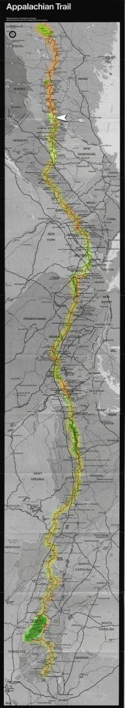

| Home | The Fox | Statistics | Maps | Churches |
StatusConfirmed - Last contact with the Fox was from:Confirmed - Gorham, VT Confirmed - 1862.3 miles complete (86.21%) Confirmed - 297.9 miles to go (13.79%) Gorham, NH[25 July 1999] On Sunday night the Fox checked in, and reported that he is safely past the Presidential range of New Hampshire without sharing any of the dire experiences shared by southbounders. The wind was blowing at around 20 to 25 miles per hour. His path took him in and out of the clouds, but offered many good views when he passed out of them. He mentioned in particular that it was ``exceptionally clear'' when he reached Franconia Ridge and offered a ``spectacular view.'' From Gorham he will quickly pass into Maine, the final state of his journey.[Editorial Note: you have probably noticed these updates slowing somewhat, as the maintainer of these pages prepares to leave for a two-week vacation that will end with picking up the Fox at Katahdin. An effort will be made despite this to continue updating the pages. Be forewarned, however, that when the Fox enters the hundred-mile wilderness at the end of the trail that updates will probably cease until we meet him at the other end.] |

The white arrow indicates the Fox's last confirmed position on the trail.
|